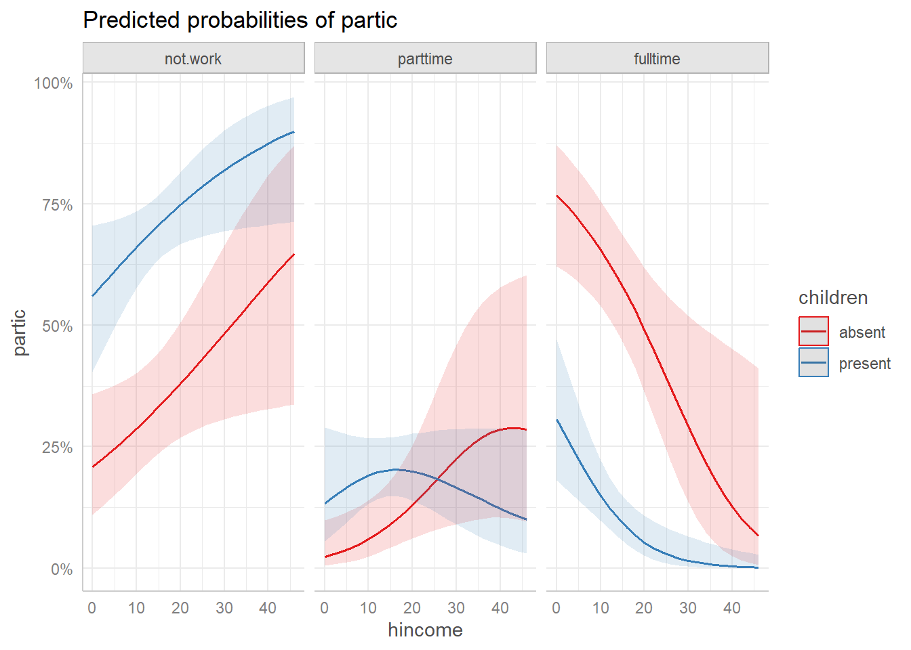
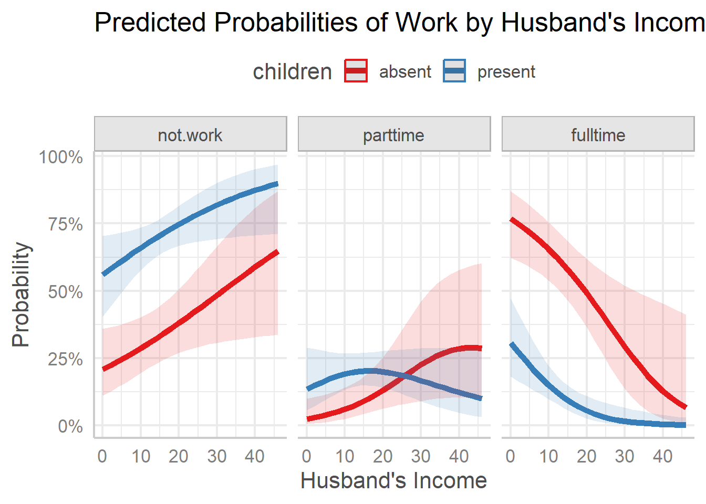
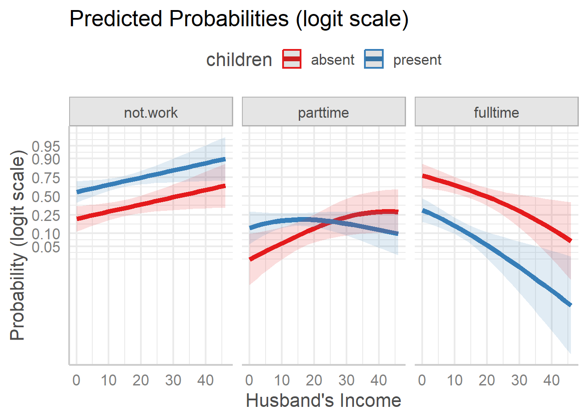
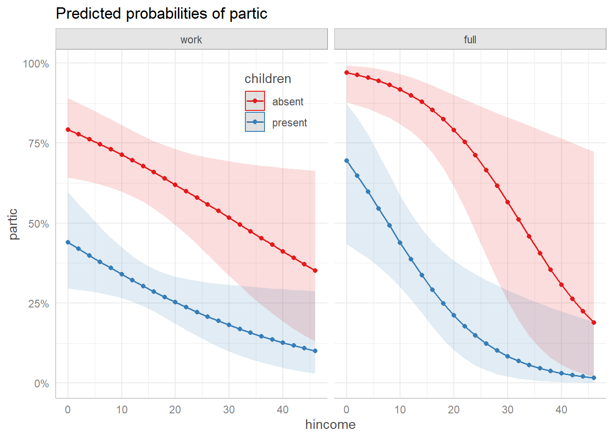
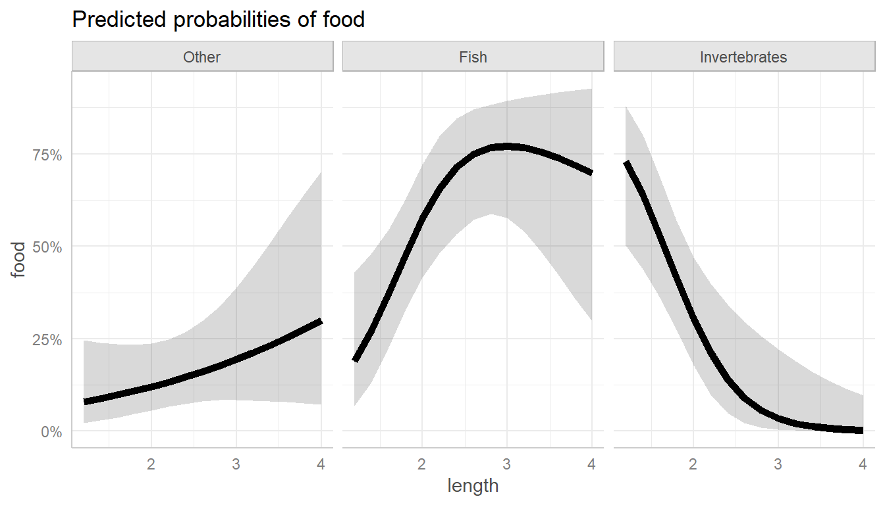
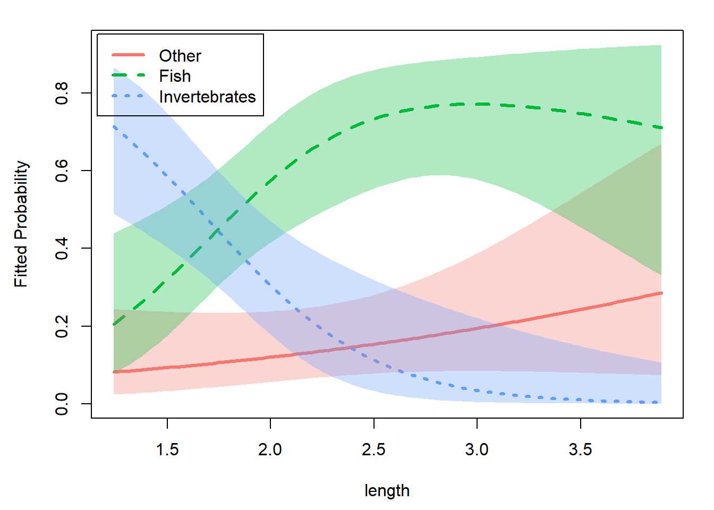

Using ggeffects with nestedLogit models
Michael Friendly
2026-03-24
Source:vignettes/ggeffects.Rmd
ggeffects.RmdLoad the packages we’ll use here:
library(nestedLogit) # Nested Dichotomy Logistic Regression Models
library(ggeffects) # Create Tidy Data Frames of Marginal Effects
library(ggplot2) # Data Visualisations Using the Grammar of GraphicsOverview
The ggeffects package (R-ggeffects?;
ggeffects2018?) provides a simple and unified
interface for computing and plotting adjusted predictions and marginal
effects from a wide variety of regression models. Its main function,
predict_response(), returns a tidy data frame of model
predictions that can be plotted directly with a built-in
plot() method or further customized with
ggplot2.
The package now supports "nestedLogit" objects, making
it easy to visualize predicted probabilities for each response category
across levels of the predictors, without the manual data wrangling
described in
vignette("plotting-ggplot", package = "nestedLogit").
Note:: ggeffects will at some point be
superseded by the modelbased
package from the easystats
project.
👩 Women’s labor force participation
We use the standard Womenlf example from the main
vignette. The response partic has three categories — not
working, working part-time, and working full-time — modeled as nested
dichotomies against husband’s income and presence of young children.
data(Womenlf, package = "carData")
comparisons <- logits(work = dichotomy("not.work", c("parttime", "fulltime")),
full = dichotomy("parttime", "fulltime"))
wlf.nested <- nestedLogit(partic ~ hincome + children,
dichotomies = comparisons,
data = Womenlf)Predicted probabilities with predict_response()
The simplest way to obtain predicted probabilities and a plot is with
predict_response(), specifying the focal predictors in the
terms argument. This returns predicted probabilities for
each response level, with confidence intervals, averaged over the
non-focal predictors. The default print method displays these
(“prettified”) for a small subset of values of the quantitative
predictor, hincome.
wlf.pred <- predict_response(wlf.nested, terms = c("hincome", "children"))
wlf.pred
#> # Predicted probabilities of partic
#>
#> partic: not.work
#> children: absent
#>
#> hincome | Predicted | 95% CI
#> --------------------------------
#> 0 | 0.21 | 0.11, 0.36
#> 12 | 0.30 | 0.21, 0.42
#> 22 | 0.40 | 0.28, 0.54
#> 46 | 0.65 | 0.34, 0.87
#>
#> partic: not.work
#> children: present
#>
#> hincome | Predicted | 95% CI
#> --------------------------------
#> 0 | 0.56 | 0.40, 0.70
#> 12 | 0.68 | 0.60, 0.75
#> 22 | 0.76 | 0.67, 0.83
#> 46 | 0.90 | 0.71, 0.97
#>
#> partic: parttime
#> children: absent
#>
#> hincome | Predicted | 95% CI
#> --------------------------------
#> 0 | 0.02 | 0.01, 0.10
#> 12 | 0.07 | 0.03, 0.15
#> 22 | 0.15 | 0.07, 0.29
#> 46 | 0.29 | 0.10, 0.60
#>
#> partic: parttime
#> children: present
#>
#> hincome | Predicted | 95% CI
#> --------------------------------
#> 0 | 0.13 | 0.06, 0.29
#> 12 | 0.20 | 0.14, 0.27
#> 22 | 0.19 | 0.13, 0.28
#> 46 | 0.10 | 0.03, 0.28
#>
#> partic: fulltime
#> children: absent
#>
#> hincome | Predicted | 95% CI
#> --------------------------------
#> 0 | 0.77 | 0.62, 0.87
#> 12 | 0.63 | 0.51, 0.73
#> 22 | 0.45 | 0.32, 0.60
#> 46 | 0.07 | 0.01, 0.41
#>
#> partic: fulltime
#> children: present
#>
#> hincome | Predicted | 95% CI
#> --------------------------------
#> 0 | 0.31 | 0.18, 0.47
#> 12 | 0.12 | 0.08, 0.19
#> 22 | 0.04 | 0.02, 0.10
#> 46 | 0.00 | 0.00, 0.03The default plot() method produces a faceted plot with
one panel for each response category and separate curves for the levels
of the other predictor (children).
plot(wlf.pred)
Predicted probabilities from predict_response() with
default ggeffects plot.
Customizing the plot
The plot() method returns a ggplot object,
so it can be further customized with standard ggplot2
functions. For example, we can adjust the line size, labels, theme, and
legend position:
plot(wlf.pred,
line_size = 2) +
labs(title = "Predicted Probabilities of Work by Husband's Income",
y = "Probability",
x = "Husband's Income") +
theme_ggeffects(base_size = 14) +
theme(legend.position = "top")
Customized ggeffects plot with adjusted labels and theme.
Plotting on the logit scale
ggplot2 provides a built-in "logit"
transformation for axes via
scale_y_continuous(transform = "logit"). This displays
predicted probabilities on the logit scale,
,
where the axis labels remain as probabilities but their spacing reflects
the logit transformation. This is useful because the logistic regression
model is linear on the logit scale, so the predicted curves appear as
straighter lines.
Since the plot() method for ggeffects
returns a ggplot object, we can simply add this scale
transformation. Note that we need to specify breaks manually, because
the automatic break algorithm does not work well with the logit
transformation.
plot(wlf.pred,
line_size = 2) +
scale_y_continuous(
transform = "logit",
breaks = c(0.05, 0.10, 0.25, 0.50, 0.75, 0.90, 0.95)
) +
labs(title = "Predicted Probabilities (logit scale)",
y = "Probability (logit scale)",
x = "Husband's Income") +
theme_ggeffects(base_size = 16) +
theme(legend.position = "top")
Predicted probabilities on the logit scale.
These plots show something different, and simpler than what appears
on the probability scale. For both the not.work and
fulltime response categories, the effect of children is
essentially an additive one, with having small children reducing the
probability. The response category parttime shows an
interactive pattern, with different shapes for those with children
present vs. absent.
Plotting the dichotomies
Recent updates1 to ggeffects now make it
possible to calculate and plot the predicted probabilities for the
sub-models that comprise the nested logit — for example, plotting
predicted values for the work and full
dichotomies separately. This is done by passing the argument
submodels = "dichotomies" to
predict_response().
In such plots, it is sometimes useful to show explicitly the points
on the grid of predictor values used in estimation. Just add
geom_point() for this. You can also achieve greater
resolution in the plot by moving the legend inside the plot as shown
below.
wlf.pred.dichot <- predict_response(wlf.nested, terms = c("hincome", "children"),
submodel = "dichotomies")
plot(wlf.pred.dichot) +
geom_point() +
theme(legend.position = "inside",
legend.position.inside = c(.40, .85))
Predicted probabilities for the two dichotomies.
In this view, we see that the decision to work or not varies in a simple decreasing manner with husband’s income, and there is a large decrement in the probability of working when there are young children in the home.
For those women who are working, the distinction between working fulltime vs. parttime is also simple to describe.
🐊 Alligator food choice
As a simpler example with a single continuous predictor, we fit a
nested logit model to the gators data (originally from
Agresti (2002)) predicting primary food
choice from alligator length. The first dichotomy contrasts {Other}
vs. {Fish, Invertebrates}, and the second contrasts {Fish}
vs. {Invertebrates}.
data(gators)
# setup the dichotomies
gators.dichots = logits(
other = dichotomy("Other", c("Fish", "Invertebrates")),
fish_inv = dichotomy("Fish", "Invertebrates"))
as.tree(gators.dichots)
#> (response)
#> / \
#> Other {Fish, Invertebrates}
#> / \
#> Fish Invertebrates
# fit the model
gators.nested <- nestedLogit(food ~ length,
dichotomies = gators.dichots,
data = gators)Now, get the predicted response probabilities, and plot them:
predict_response(gators.nested, terms = "length") |>
plot(line_size = 2)
Predicted food choice probabilities for alligators by length.
As you can see, the main thing going on here is that larger alligators prefer fish, which smaller ones prefer invertebrates. This makes perfect sense if you’re an alligator!
For comparison, the basic nestedLogit::plot() method
using default arguments gives a similar plot, with the three curves
overlaid in a single panel (it uses graphics::matplot()). A
new feature of the plot method is to dispense with a legend entirely, by
using direct labels (label = TRUE) on the predicted
curves.
plot(gators.nested, x.var = "length",
lty=1, lwd = 4,
label = TRUE, label.col = "black", cex.lab = 1.3)
Predicted food choice probabilities for alligators by length.
Summary
The ggeffects package computes and plots predicted
probabilities for the response categories of a nested logit
model. As shown above, these can be displayed on the logit scale using
ggplot2’s built-in axis transformation. You can now also
display the predicted probabilities for the separate dichotomies (e.g.,
work and full) as illustrated above.
For more specialized displays, see
vignette("plotting-ggplot", package = "nestedLogit"), which
describes a manual workflow using predict() with
model = "dichotomies" and as.data.frame() to
construct fully customized ggplot2 plots.